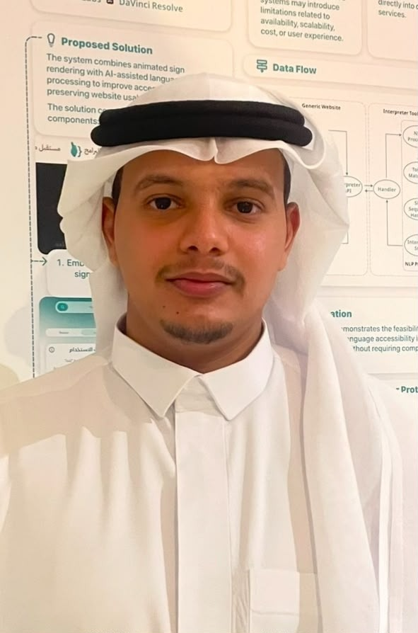

HCI Specialist & UX Strategist
I'm Ghali Alharbi
Bridging the gap between human intuition and computing power. Designing accessible, meaningful, and efficient digital experiences.

About Me
As a Human-Computer Interaction (HCI) specialist, I focus on the symbiosis between people and technology. My approach combines psychological research methods with creative design thinking to solve complex technical challenges.
User Research
Qualitative & quantitative user behavior analysis.
UI/UX Design
Crafting intuitive and accessible digital interfaces.
Usability Testing
Evaluating products through rigorous user testing.
Interaction Design
Designing seamless human-computer feedback loops.
Featured Work
Click on any project to view the full HCI case study and mockups.